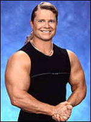

professor bench: good evening tony
TONY LITTLE: GREAT TO TALK TO YOU DOUG, I HOPE I CAN HELP OUT YOUR READERS!
dourg: are you capable of speak in normal volume level ie. not screaming
TONY LITTLE: SORRY DOUG, BUT I FEEL GREAT! AND YOUR READERS CAN TOO IF THEY HAVE A REGULAR EXCERSIZE ROUTINE AND MAKE SMART EATING CHOICES.
douj baech: what mobilization process do you recommend for fat people ie. glutton / slob / society faiulure / rejecrt
TONY LITTLE: I'M GLAD YOU ASKED! MY GAZELLE WORK-